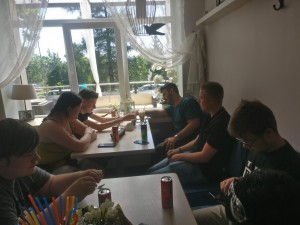
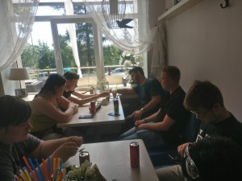

Nieuws
Project Letland 2018
Er is goedkeuring voor een nieuw Project Letland, een project waarin een aantal leerlingen twee weken naar Letland gaan om daar computers en randapparatuur te brengen en te installeren. De leerlingen zijn vrijdag 18 mei vertrokken.
Woensdag 30 mei
Deze dag was bedoeld als een cultureel uitstapje naar Rezekne en aan het eind van de dag was een ontmoeting met de studentenraad van een van de scholen van deze stad gepland. Voordat we 's ochtends zijn gaan rijden, hebben we eerst in de buurt van het hotel Vonadzini, bij een ander complex gekeken, dat ook kamers verhuurt. Wellicht iets voor een volgende keer in Letland. De reis naar Rezekne nam ruim een uur in beslag en onderweg zagen we hoe de Letten wegonderhoud doen: langzaam en erg chaotisch. Blijkbaar betekent een rood verkeerslicht niet altijd dat je ook echt moet stoppen. Eenmaal in Rezekne eerst maar even wat eten en drinken en vervolgens het centrum in. Dit bleek echter nogal tegen te vallen: een paar winkels en een supermarkt, dus er moest voor de rest van de dag iets worden verzonnen. Daarom maar naar een dierentuin rijden, waarvan meneer Hengstman een bordje had gezien. De dierentuin bleek een veredelde kinderboerderij, waar we ook nog eens weg werden gejaagd door een boze Russischsprekende man, blijkbaar zat de boel dicht? Terwijl wij een uur voor sluitingstijd daar waren? Tot overmaat van ramp bleek ons contactpersoon voor de studentenraad in het ziekenhuis terecht te zijn gekomen, waardoor de ontmoeting aan het eind van de dag ook niet kon doorgaan. Dan maar terug naar Balvi. Daar bij het restaurant een paar enorme pizza's besteld (groot gedeelte bewaard voor de avond) om de teleurstellingen weg te werken en vervolgens terug naar het hotel, waar iedereen uiteindelijk toch wel vermoeid was van de hele dag onderweg zijn 
